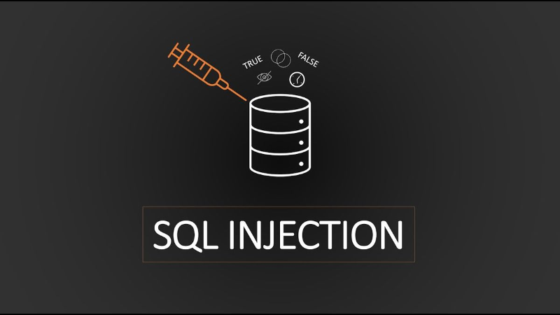
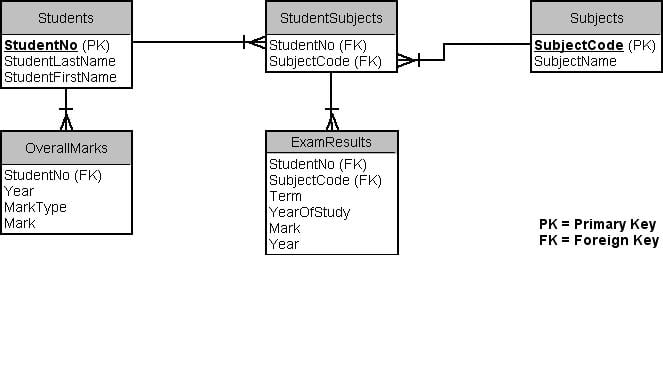
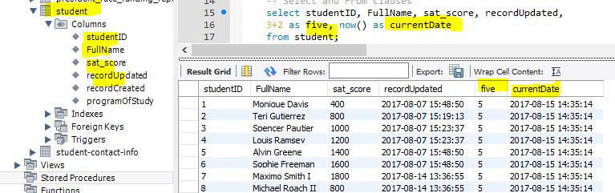

Understanding SQL Injection — Safe Lab & Prevention
This activity explains what SQL Injection is, how to practice safely in legal labs,
and how to prevent it in applications. Practice only in controlled, authorized environments.

What is SQL Injection?
SQL Injection (SQLi) is a class of security vulnerability where an attacker can influence
application SQL queries through untrusted input. This can lead to data leakage, modification,
or other unintended behavior. The purpose of this activity is defensive: learn to detect and fix SQLi.

Vulnerable Example (for learning only)
The snippet below shows a common insecure pattern: building SQL by concatenating user input.
Never use this pattern in production — it is shown here so you can recognise it and learn the fix.
// Example: Vulnerable PHP (do NOT use in production)
$user = $_GET['user']; // untrusted input
$sql = "SELECT * FROM users WHERE username = '" . $user . "';";
$result = $db->query($sql);
Secure Fix — Use Parameterized Queries / Prepared Statements
Use parameterized queries (prepared statements) so user input is treated as data — not SQL.
Below are defensive examples in PHP (PDO), Python (sqlite3), and Node.js (mysql2).
// PHP (PDO) - safe
$stmt = $pdo->prepare('SELECT * FROM users WHERE username = :username');
$stmt->execute(['username' => $_GET['user']]);
$rows = $stmt->fetchAll();
# Python (sqlite3) - safe
cur.execute("SELECT * FROM users WHERE username = ?", (user_input,))
rows = cur.fetchall()
// Node.js (mysql2) - safe
const [rows] = await pool.execute('SELECT * FROM users WHERE username = ?', [userInput]);
How to Practice Safely (Legal Labs)
- Install and use intentionally vulnerable applications in a local VM — examples: DVWA (Damn Vulnerable Web App) and OWASP Juice Shop.
- Use isolated environments: VirtualBox / VMware, or Docker containers. Never scan or attack systems you don't own or have explicit permission to test.
- Follow lab documentation and use snapshots so you can restore clean states after testing.
Key Prevention Best Practices
- Use prepared statements / parameterized queries for all database access.
- Use least-privilege database accounts (avoid using DB admin account from your app).
- Validate and sanitize inputs where appropriate (but don't rely on this alone).
- Use an ORM that enforces parameterization where possible.
- Employ web application firewalls (WAF) and input encoding on output.
- Keep libraries and database drivers up to date, and run regular security testing (authorized).
Activity Steps (Safe & Authorized)
- Set up a local lab: install DVWA or Juice Shop inside a VM or Docker container.
- Read the lab documentation and use only the provided exercises.
- Identify insecure code patterns and implement fixes (use the safe examples above).
- Document what you changed and why .

Reflections
This activity taught me how SQL injection works conceptually and the importance of
defensive coding. The most important lesson is: never trust user input — always use
parameterized queries and follow the principle of least privilege.